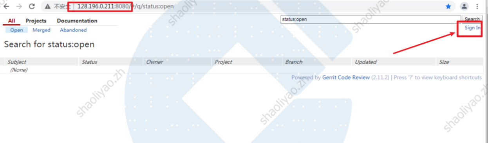
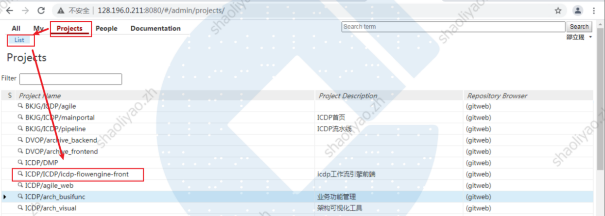
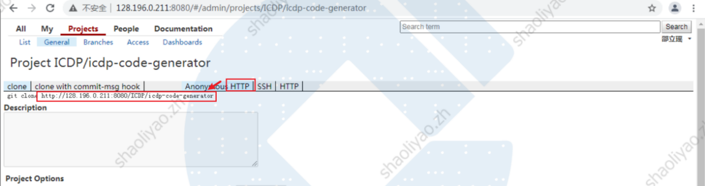
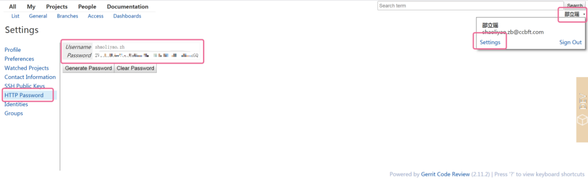
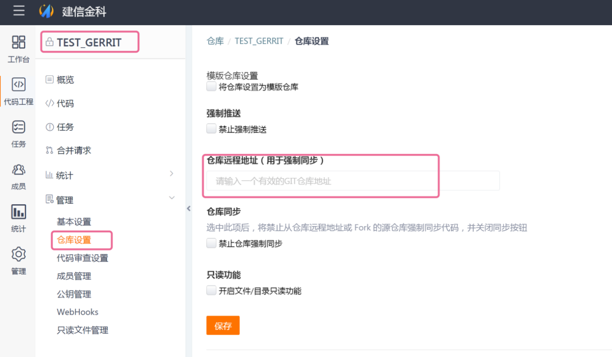
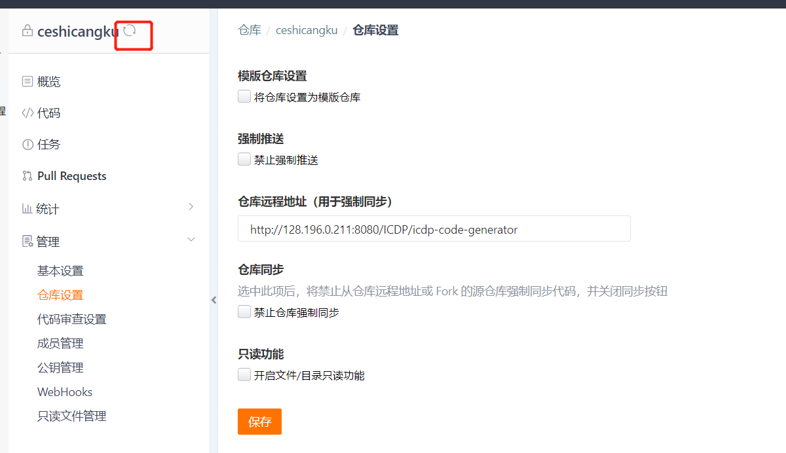
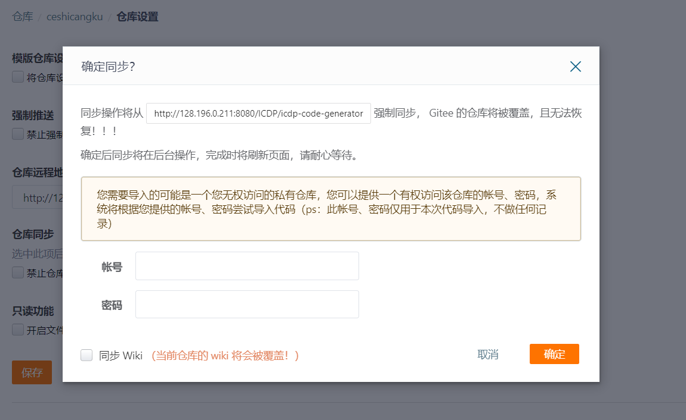
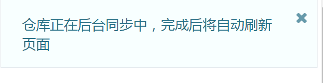
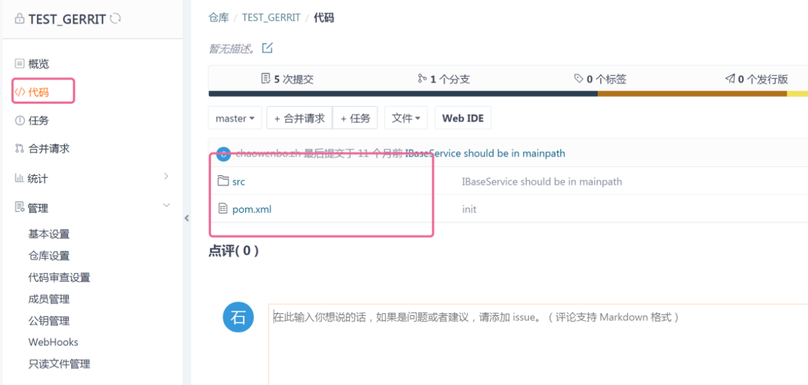

在线视频参考：
①目标仓库确认
在代码托管模块上创建待同步的空仓库，确保代码托管模块的仓库已经建立。
仓库新建详见 “代码托管模块登录”，和“新建仓库注意事项”
②拿到gerrit仓库地址
进入gerrit代码审详见址，点击右上角登录，登录用户名密码与icdp进入代码工程地址相同。gerrit审批地址：128.196.0.211:8080
(注：非icdp上面SSH的地址，要进入代码审批页面获取)

选择【projects】——【list】查看代码仓库地址，选择要导入的代码仓库

选择http ，复制下方地址

③代码托管模块：拿到Gerrit 的”http password”
点右侧登录姓名，然后选择”settings”,然后选择”http password”，如果没有密码点击“ Generate passsword” ,如果已有就copy出来。

④代码托管模块：填写gerrit仓库地址
回到代码托管页面，选择仓库设置。将gerrit源仓库的地址粘贴入内。点击保存。

⑤代码托管模块：刷新页面，点击同步按钮
保存成功之后，点击浏览器的刷新按钮，要刷新整个页面。点击“刷新”按钮 。然后点击左上角“同步”按钮。

⑥代码托管模块：输入账号密码，点击确定，同步完成
输入gerrit 的http password的用户密码。点击确定，即可进行同步。

在页面的右上角会提示后台同步中，成功后会有成功提示。

然后进入到代码中去查看，可以查看新仓库中代码已经迁移完成。
